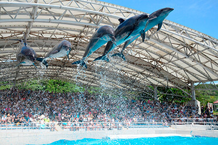
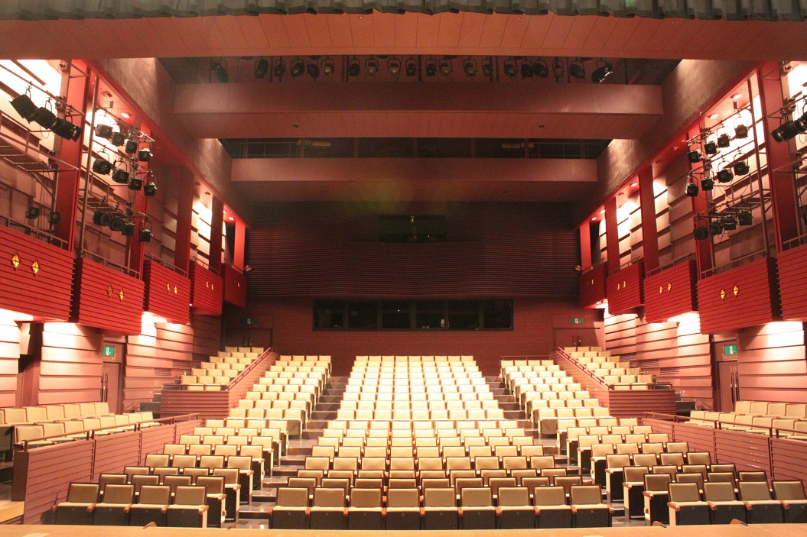
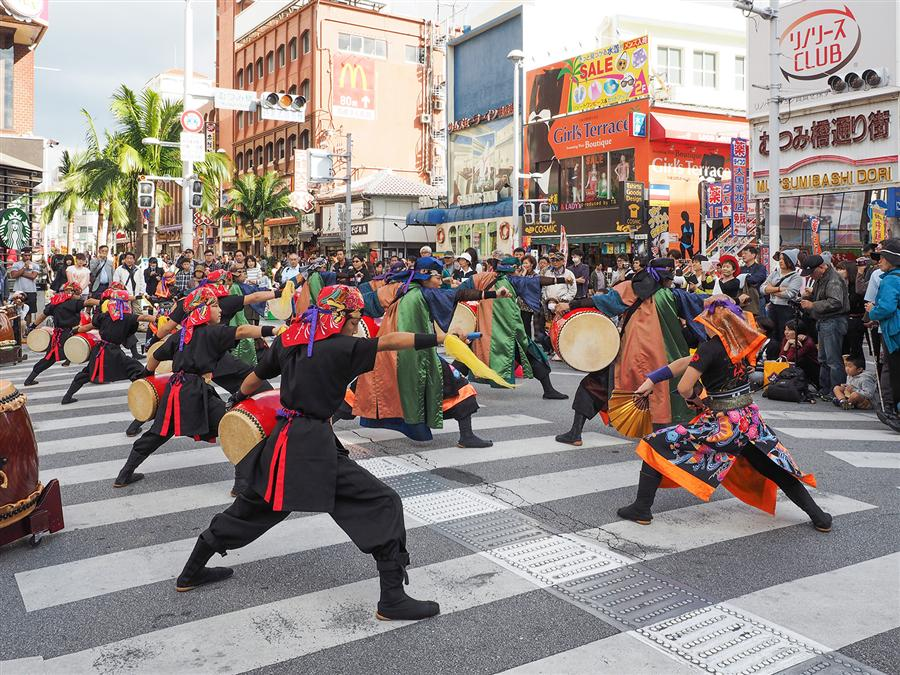
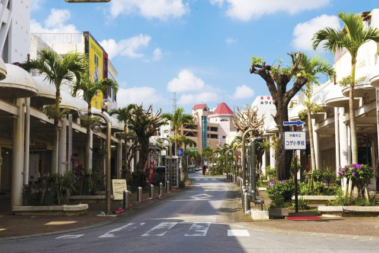
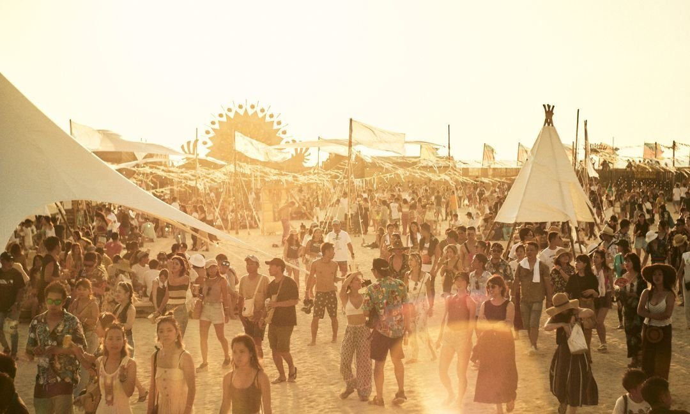
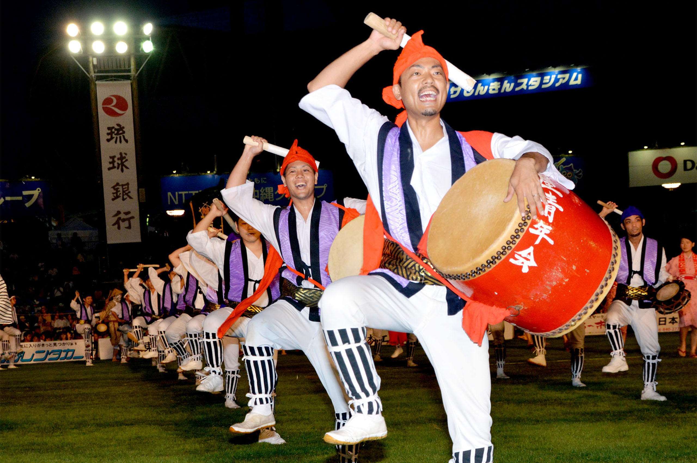
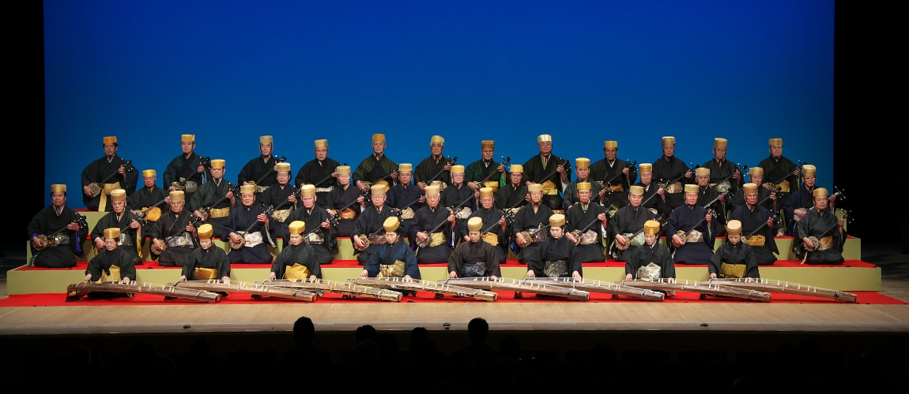

琉球村傳統表演
介紹：琉球村是一個重現琉球王國時代的主題公園，遊客可以在這裡觀賞到各種傳統表演，如Eisa舞蹈、獅子舞和三線音樂。這些表演展示了沖繩豐富的文化遺產。
地點：恩納村

美麗海水族館晚間音樂會
介紹：除了參觀水族館，遊客還可以在特定時間觀賞到在美麗海水族館舉行的晚間音樂會，這些音樂會通常在露天舉行，伴隨著海洋的聲音，為觀眾帶來獨特的音樂體驗。
地點：本部町

那霸市民劇場
介紹：那霸市民劇場是那霸市內主要的表演藝術場地之一，定期舉辦各種音樂會、戲劇和舞蹈表演。遊客可以在這裡觀賞到傳統和現代的音樂及表演藝術。
地點：那霸市

國際通街頭表演
介紹：國際通是那霸市最繁忙的商業街之一，常有街頭藝人表演三線音樂、琉球舞蹈等形式的街頭藝術，讓遊客在購物和觀光時享受現場音樂和舞蹈。
地點：那霸市國際通

沖繩音樂村
介紹：這是一個專門展示沖繩音樂和舞蹈的表演場所，定期舉辦各種音樂會和舞蹈表演，。遊客可以在這裡深度體驗沖繩的音樂文化。
地點：浦添市

琉球民謠酒吧
介紹：琉球民謠酒吧是專門播放琉球民謠音樂的場所，通常由當地音樂家現場演奏三線、太鼓等樂器，並演唱傳統民謠，讓遊客能夠近距離欣賞沖繩的傳統音樂。
地點：那霸市、沖繩市

沖繩國際音樂節
介紹：這是一個年度音樂節，匯聚了來自世界各地的音樂家和樂隊，展示各種音樂風格。節日活動包括戶外音樂會、街頭表演和工作坊，是音樂愛好者不容錯過的盛會。
地點：那霸市及周邊地區

嘉手納花火大會
介紹：一種傳統的沖繩太鼓舞蹈，每年夏天，沖繩各地會舉辦Eisa太鼓比賽和表演活動。展示了各個Eisa團隊的技藝和創意，是欣賞沖繩傳統表演藝術的絕佳機會。
地點：沖繩市

三線音樂會
介紹：三線是沖繩特有的三弦樂器，擁有悠久的歷史。沖繩各地定期舉辦三線音樂會，展示這種樂器的獨特音色和演奏技巧。遊客可以在這些音樂會中欣賞到傳統的三線音樂和現代的改編作品。
地點：那霸市、石垣市等